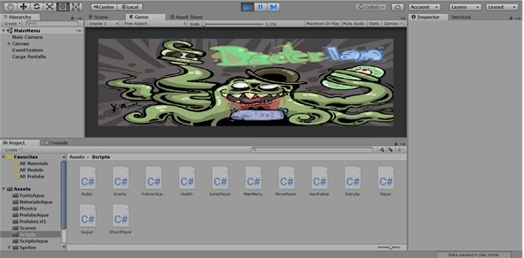
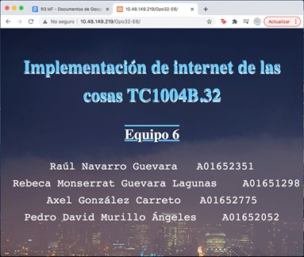

Hola, mi nombre es Axel González Carreto, tengo 19 años y actualmente me encuentro en mi 4°semestre de universidad, estoy estudiando para Ing. Tecnologías Computacionales en el Tecnológico de Monterrey CCM.
Desde pequeño me ha gustado mucho todo lo relacionado con los Videojuegos, también comparto un gran interés en la Inteligencia Artificial, en IoT y en Hacking.
Trabajo duro para poder algun día dejar mi huella en el mundo y en la sociedad, me esfeurzo día a día para poder lograr ese impacto; mientras tanto disfruto del largo viaje que me queda por recorrer mientras trato de ayudar a nuestro planeta y a todos sus seres que la habitan.
Fecha: 4-5 semestre de preparatoria
Bacter-Ian es un videojuego creado en Unity con ayuda de mi quipo de trabajo a lo largo del semestre; siendo este mi primer videojuego. En dicho videojuego, pude aprender y piner aprueba temas desde porgrmacíon, animación, UI y físicas en Unity. El videojuego trata sobre un niño que se contagia de una bacteria, dicha bacteria es la protagonista del juego, siendo su deber, llegar al cerebro; pero para ello, tendra que pasar por tres diferentes niveles y derrotar al jefe final (cerebro).
Fecha: 3 semestre de universidad
En esta activdad, tuve la oportunidad de crear una página web desde cero, aprendiendo html, css y un poco de java; pero no solamente fue la creaión de la pagína web, sino también todo el tema vinculado a bases de datos, ya que hicimos uso de esta para almacenar y hacer querys de y para nuestra página, donde aprendi a usar sql. Además, usando MATLAB-Simulink y Packet Tracer, pudimos conectarnos al servidor de la base de datos para poder lograr el objetivo de simular un monitorio del aire mediante datos en MATLAB-Simulink y Packet Tracer los cuales se subieron a la base de datos del servidor y posteriormente fueron desplegados en la página web.
Fecha: 3 semestre de universidad
Durante el tercer semestre, tuvimos un reto el cual concistia en saber detectar cuando, como y en donde se estaba posiblemente haciedno un botmaster. Para ello, tuvimos varias entregas parciales donde ibamos poco a poco aprendiendo diferentes estrcuturas de datos y algoritmos fundamnetales; entre ellos puedo destacar algoritmos de busqueda y ordenamiento, listas, listas ligadas, listas doblemente ligadas, árboles binarios, grafos y código hash.
Jugar fútbol
Jugar videojuegos
Escuchar música
Fan del FC Barcelona
| TOP 5 | Peliculas | Series | Videojueos | Equipos de fútbol |
|---|---|---|---|---|
| 1 | The joker | The flash | Rocket League | FC Barcelona |
| 2 | Avatar | Naruto | Halo | Manchester City |
| 3 | Advengers:Endgame | Dragon Ball | Fifa | FC Bayen Munich |
| 4 | Jojo Rabbit | Los caballeros del zodiaco | Call of Duty | FC Ajax |
| 5 | Coco | Sword art online | Call of Duty | Liverpool FC |